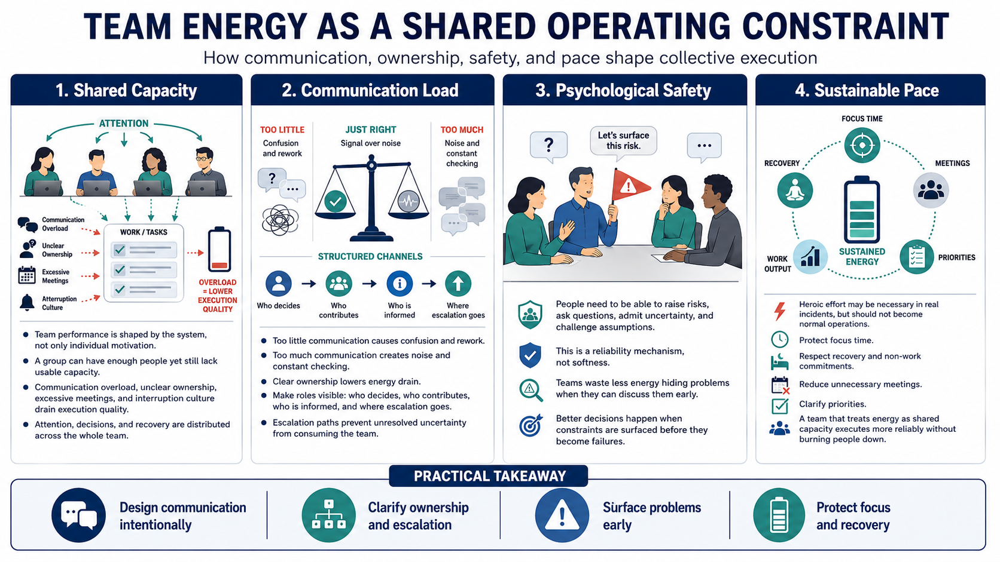

Energy in Teams and Organizations
Connecting to LMS... Progress: in progress

Narration
Team energy is a shared operating constraint. A group can have enough people and still lack the collective capacity for good execution if communication load is too high, ownership is unclear, meetings are excessive, or interruption culture prevents focus. Team performance is not only a sum of individual motivation. It is shaped by the system that distributes attention, decisions, and recovery.
Communication load deserves careful design. Too little communication creates confusion and rework. Too much communication creates noise and constant checking. Clear ownership reduces energy drain because people know who decides, who contributes, who needs to be informed, and where escalation should go. Escalation paths matter because unresolved uncertainty can consume attention across an entire team.
Psychological safety at a practical level means people can raise risks, ask questions, admit uncertainty, and challenge assumptions without unnecessary punishment or humiliation. This is not softness. It is a reliability mechanism. Teams waste less energy hiding problems when they can discuss them early. They also make better decisions when people can surface constraints before those constraints become failures.
Sustainable pace reduces reliance on heroic individual effort. Heroics may be necessary during a real incident, but they should not become the standard operating model. Protecting focus time, respecting recovery and non-work commitments, reducing unnecessary meetings, and clarifying priorities all help teams use energy more wisely. A team that treats energy as shared capacity can execute more reliably without burning people down.